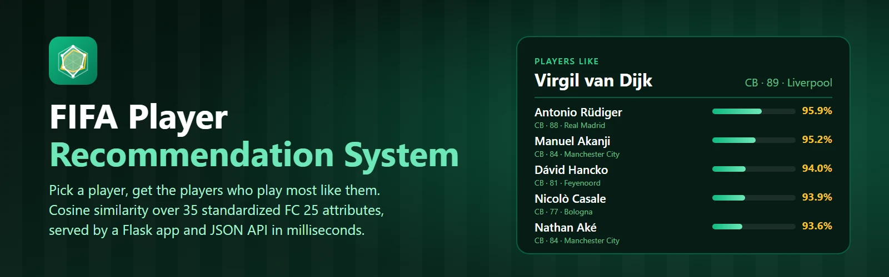
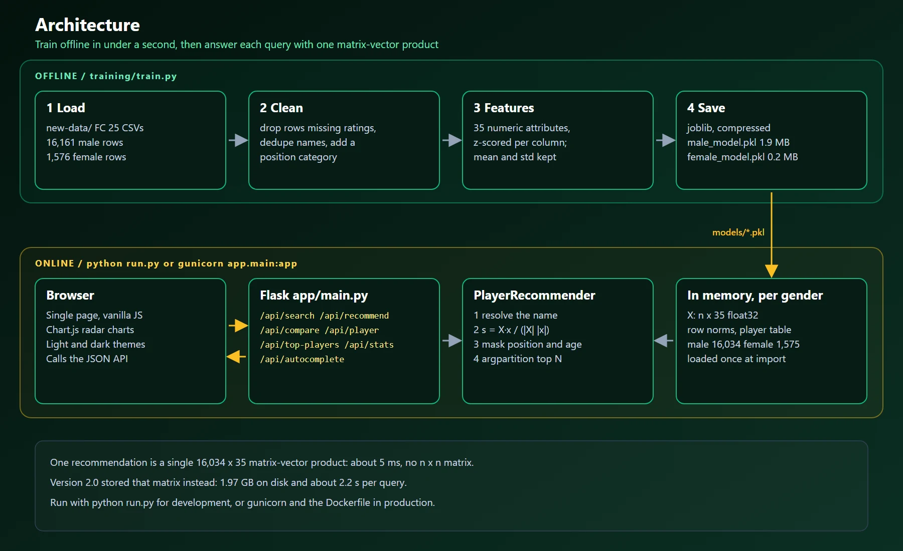
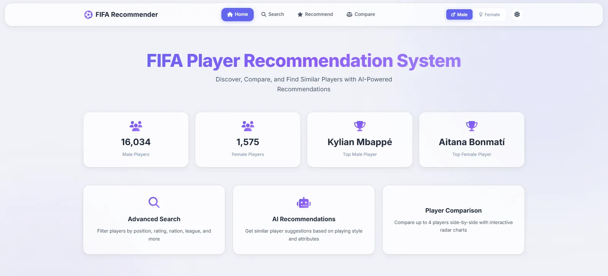
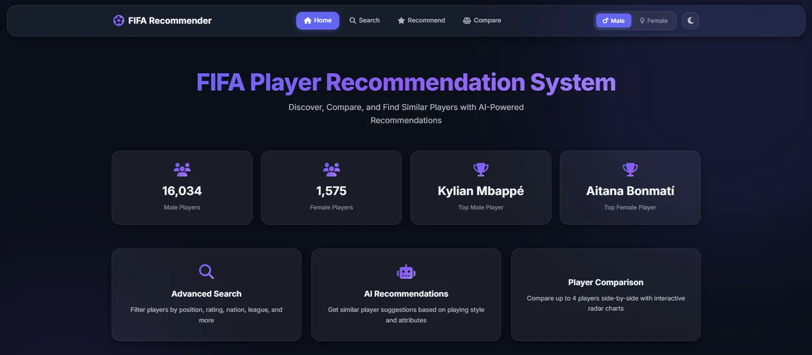
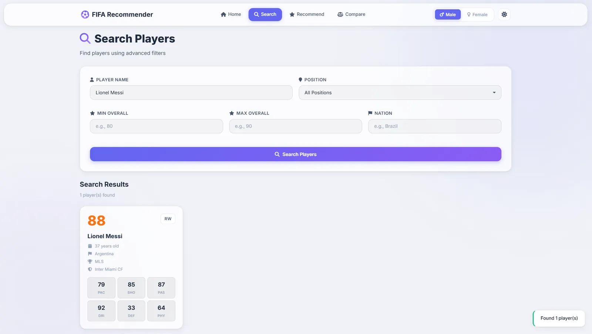
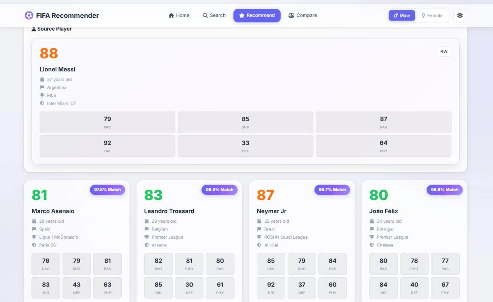
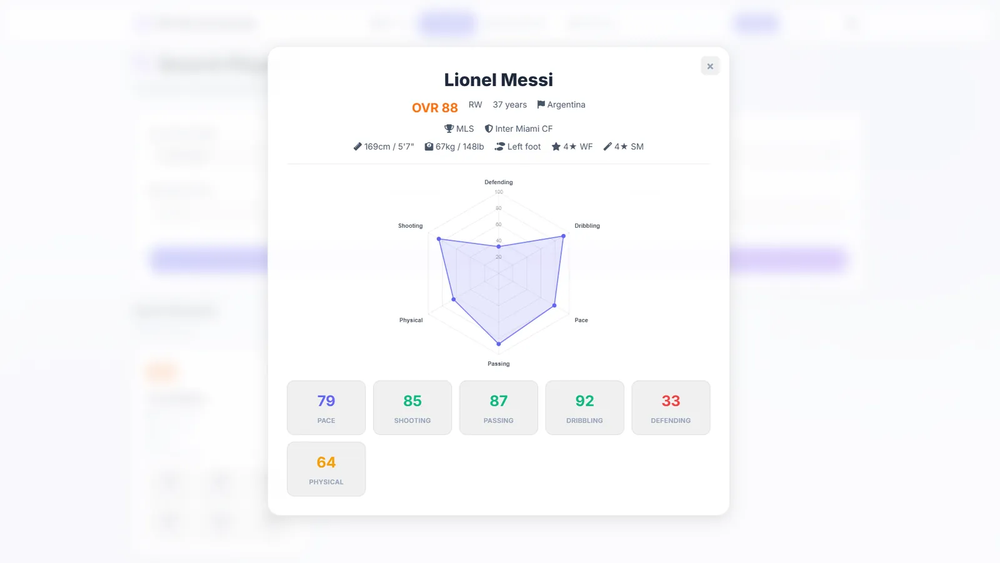
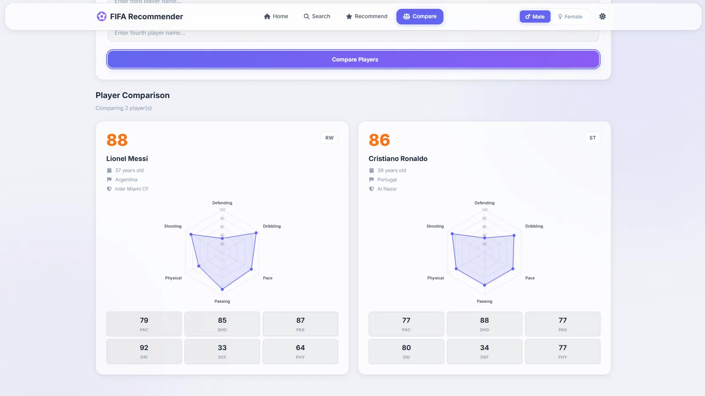

FIFA Player Recommendation System
Project Overview
This is a player recommendation system built on EA SPORTS FC 25 ratings. You pick a player, and the app finds the players whose attribute profile is closest, by default within the same position group and optionally within a few years of age. It covers 16,034 men's and 1,575 women's players, lets you search by name, position, rating, nation, league or club, and puts up to four players on one radar chart.

It is a Flask app with a single-page frontend and a JSON API. There is no database: each model is a small file with the player table and a standardized feature matrix, loaded into memory at startup. A recommendation is one matrix-vector product, which takes about 5 ms, so the same code works as a web app, an API for your own product, or a library in a notebook.
Updates in 2.1
- From 1.97 GB to 1.9 MB. Version 2.0 precomputed the full player-by-player similarity matrix. Scores are now computed on demand, which shrinks the men's model a thousandfold and cuts a recommendation from about 2.2 s to about 5 ms. Training both models takes half a second.
- Better matches. Attributes are standardized before cosine similarity instead of min-max scaled. Before, every score sat between 99% and 100%; now the top five for Rodri are Locatelli, Merino, Tchouaméni, Rice and Guimarães instead of including a 70-rated midfielder whose ratings merely had the same shape.
- Production basics. The app works under gunicorn and waitress, ships with a Dockerfile that runs as a non-root user, has a health endpoint, bounds every client-supplied size, and never returns exception text to clients.
- Tested. A pytest suite checks ranking against a brute-force calculation, the filters, loading of older model files, and every endpoint.
Why I Built This
I built this as a side project to work on something concrete with recommender systems. Most tutorials on recommendation engines use movies or books. I wanted to apply the same ideas to a domain that is more interesting to me, and one where the features are richer and more structured.
This project also gave me a reason to build a full end-to-end ML system from scratch: data cleaning, feature engineering, model training, a REST API, and a frontend. I published it open source so that other developers learning about content-based filtering or ML systems have a real working example they can read, run, and modify.
The Problem
Finding players with similar play styles in FIFA is not straightforward. Every player has dozens of attributes, and comparing them by hand does not scale past a handful of names.
This project reduces that problem by:
- Measuring how similar any two players are across 35 attributes
- Giving you the top N most similar players for any player you search
- Letting you compare multiple players visually with radar charts
- Supporting filters like position group and age gap so results stay relevant
It is a practical example of how content-based filtering works when your "items" have structured numeric features.
Key Features
Similarity Recommendations
Cosine similarity over 35 standardized attributes returns the top N most similar players, filtered by position group and age gap.
Player Search
Search with filters for name, position, overall rating, nationality, league, and team. Autocomplete for player name lookups.
Multi-Player Comparison
Compare 2 to 4 players at once with a radar chart overlay, useful for scouting alternatives.
Men's and Women's Players
Separate models for the two player pools, each standardized on its own data. Switch between them with a single toggle.
JSON API
Every screen is backed by an endpoint: recommend, search, compare, player details, top players, autocomplete, stats and health.
Easy to Deploy
A Dockerfile that trains during the build and serves with gunicorn, plus a light and dark UI that works on phones.
How It Works
The system is split into an offline training phase and an online serving phase. Training does the cleaning and scaling once, so that a request only has to score one player against the rest.

- Data preparation: The training script reads the FC 25 CSV, drops rows missing ratings, removes duplicate names, and assigns each player a position group: Goalkeeper, Defender, Midfielder or Forward.
- Feature extraction: 35 numeric attributes per player: the six face stats plus 29 detailed ones such as sprint speed, vision, composure and defensive awareness.
- Standardization: Each attribute becomes a z-score using its mean and standard deviation over the dataset. The statistics are saved so that hand-written targets are scaled the same way.
- Saving: The player table, the float32 feature matrix and the scaling statistics are written as one compressed
joblibfile: 1.9 MB for the men's model, 0.2 MB for the women's. - Serving: Flask loads both models when the app is imported, so it works under any WSGI server. There is no live database.
- Recommendation: The app scores every player against the chosen one with a single matrix-vector product, masks out other position groups and age gaps, and takes the top N with
argpartition. - Frontend: A single-page HTML and JavaScript app calls the JSON API and renders results with Chart.js radar charts.
Screenshots
Home Page (Light Theme)

Home Page (Dark Theme)

Player Search

Player Recommendations

Player Profile View

Compare Players

Tech Stack
Backend
Frontend
Data
ML
Delivery
Core Code Snippets
The 35 attributes used to measure player similarity
These features form the input vectors for cosine similarity. Every recommendation comes down to how close two players' standardized versions of these values are.
FEATURE_COLUMNS = [
'PAC', 'SHO', 'PAS', 'DRI', 'DEF', 'PHY',
'Acceleration', 'Sprint Speed', 'Positioning', 'Finishing',
'Shot Power', 'Long Shots', 'Volleys', 'Penalties',
'Vision', 'Crossing', 'Free Kick Accuracy', 'Short Passing',
'Long Passing', 'Curve', 'Dribbling', 'Agility', 'Balance',
'Reactions', 'Ball Control', 'Composure', 'Interceptions',
'Heading Accuracy', 'Def Awareness', 'Standing Tackle',
'Sliding Tackle', 'Jumping', 'Stamina', 'Strength', 'Aggression'
]Standardizing before cosine similarity
Every rating is positive, so without centering all player vectors point the same way and every score lands near 100%. Subtracting the mean makes the cosine compare how each player differs from the average player.
def normalize_features(self, features):
features = features.astype(np.float64)
mean = features.mean(axis=0)
std = features.std(axis=0)
std[std == 0] = 1
return (features - mean) / std, mean, stdScoring, filtering and ranking in one pass
One matrix-vector product scores the player against everyone. Filters are boolean masks, and only the top N rows are ever turned into Python objects.
x = self.normalized_features[player_idx]
scores = (self.normalized_features @ x) / (self._norms * np.linalg.norm(x) + 1e-12)
mask = np.ones(len(self.data), dtype=bool)
mask[player_idx] = False # skip the player itself
if same_position:
mask &= (self.data['Position_Category'] == player_position).to_numpy()
if max_age_diff is not None:
mask &= np.abs(self.data['Age'].to_numpy() - player_age) <= max_age_diff
ranked = self._top_n(scores, mask, n_recommendations) # argpartition, then sort NMy Contribution
I designed and built this project end to end:
- Defined the feature set and data processing pipeline for both men's and women's player datasets
- Built the
DataProcessorandPlayerRecommenderclasses from scratch - Implemented the cosine similarity recommendation logic with position and age filtering
- Wrote the Flask REST API with search, recommend, compare, stats and health endpoints
- Designed and built the single-page frontend with Chart.js radar charts
- Set up the training script, Docker image, test suite and documentation
Challenges & Learnings
Precomputing was the slow path
The first version precomputed the full pairwise similarity matrix so that each query would be "just a
lookup". The matrix was 1.97 GB for 16,034 players, and a per-row filter loop in pandas made each
query take over two seconds anyway. Scoring one player against all others is about half a million
multiply-adds, far cheaper than reading a row through pandas. Measuring first would have saved the
detour: the right answer was to precompute nothing.
A score of 99% means nothing if everyone scores 99%
With min-max scaling, every player vector sits in the same corner of the space, so cosine similarity
mostly measured the shape of a player's ratings rather than their level. Standardizing the attributes
first spread the scores out and moved genuinely comparable players to the top.
Consistent scaling between training and inference
The feature to recommend players from custom attribute values used to scale the target by its own
minimum and maximum, which silently disagreed with the training data. Storing the training mean and
standard deviation with the model fixed it, and a test now checks that a goalkeeper's own ratings
find that goalkeeper first.
Name resolution ambiguity
Player names in the CSV are not always unique or clean. The lookup tries an exact, case-insensitive
match and then falls back to the highest-rated partial match, and the UI's autocomplete steers users
to an exact name.
Future Improvements
- Use the five goalkeeper attributes when comparing goalkeepers, which are currently compared on outfield ratings
- Per-role attribute weights, for example favouring defending attributes for centre-backs
- A name matcher that handles accents and duplicate names better
- Support for newer FC datasets without code changes
Closing Note
This project is fully open source under the MIT license. It was built as a personal learning project and shared so others can use it, study it, or improve it. If you find it useful, run into a bug, or have an idea to make it better, feel free to open an issue or a pull request on GitHub.
It is a practical, working example of how content-based filtering applies beyond the typical movies or books domain. If your items have structured numeric features, standardized cosine similarity is a strong and surprisingly interpretable baseline, and it needs far less infrastructure than people expect.
The player data comes from EA SPORTS FC 25. This is an independent project and is not affiliated with or endorsed by EA SPORTS or FIFA.